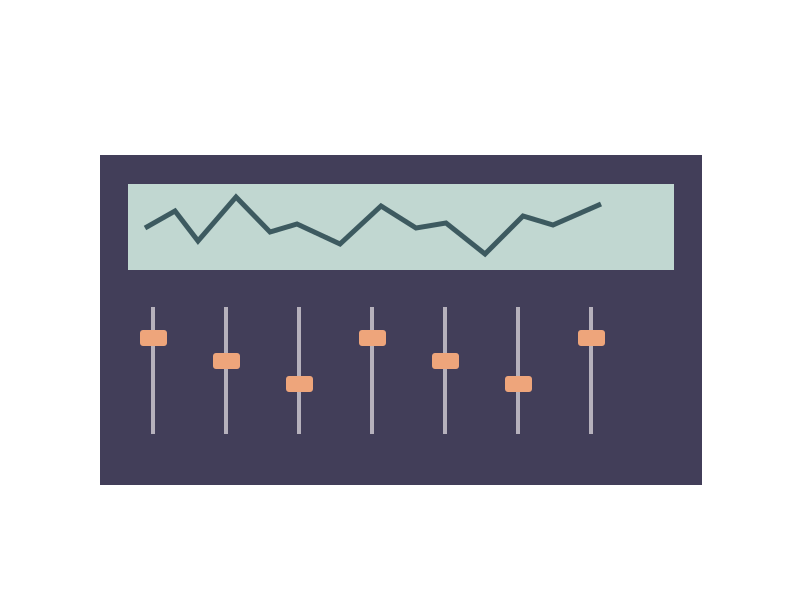

Make space for the first take.
A home-recording notebook for careful listening. Prepare a session, work with simple tools and leave room for the performance.
Listen before adding another track.
A clear arrangement often comes from removing a part. Turn the level down, compare a reference at a similar volume and give your ears a break.
Try the rhythm workbench